library(readxl)
library(knitr)
df <- readRDS("df.rds")
df <- df[is.na(df$`BP備考`), ]
dim(df)[1] 584 38ARMS バイオマーカーは質問表応答も予測するか？
hirosaki1-3.qmd では BP と \(\Sigma\)-FLC が高いほど項目応答確率が上がることを見た．しかしこれは先行研究 (Wake et al., 2022) と食い違う．2×2 で見たり，交差項を考えたりすることで，この構造をさらに詳しくみる．
元論文のロジスティック解析では，（クレアチン補正した）BP と \(\Sigma\)-FLC の値を正規化せず，そのままのスケールを保つことで discrimination score を構成し，これを cut-off value \(-0.096\) で２値判別することで，AUC \(0.912\) を達成している．
\(\Sigma\)-FLC の備考データも取り除く．
library(readxl)
library(knitr)
df <- readRDS("df.rds")
df <- df[is.na(df$`BP備考`), ]
dim(df)[1] 584 38kable(head(df))| 受付番号 | 受診日年齢 | 性別 | Weight | BP | FLCΣ | BP備考 | 判別式 | LOX-1_H | LAB_H | LOX-index_H | タイプ | 多様性 | item1 | item2 | item3 | item4 | item5 | item6 | item7 | item8 | item9 | item10 | item11 | item12 | item13 | item14 | item15 | item16 | item17 | item18 | BP_A_flag | 年代 | 活気 | イライラ感 | 疲労感 | 不安感 | 抑うつ感 | |
|---|---|---|---|---|---|---|---|---|---|---|---|---|---|---|---|---|---|---|---|---|---|---|---|---|---|---|---|---|---|---|---|---|---|---|---|---|---|---|
| 3 | 4 | 46 | 1 | 76.3 | 1.10 | 1.95 | NA | -2.974 | 136 | 3.8 | 517 | B | 2 | 2 | 3 | 3 | 2 | 2 | 2 | 1 | 1 | 2 | 2 | 2 | 1 | 2 | 2 | 1 | 1 | 1 | 1 | 0 | 40代 | 2 | 3 | 2 | 3 | 2 |
| 5 | 6 | 30 | 1 | 59.5 | 0.76 | 0.64 | NA | -2.776 | 46 | 2.2 | 101 | B | 2 | 2 | 2 | 2 | 3 | 4 | 3 | 3 | 3 | 3 | 4 | 4 | 3 | 3 | 3 | 3 | 3 | 1 | 1 | 0 | 30代 | 3 | 5 | 4 | 5 | 4 |
| 6 | 7 | 51 | 1 | 76.6 | 1.69 | 2.58 | NA | -2.377 | 78 | 3.2 | 250 | B | 2 | 2 | 2 | 2 | 2 | 2 | 2 | 2 | 2 | 2 | 2 | 2 | 2 | 2 | 1 | 1 | 1 | 1 | 1 | 0 | 50代 | 3 | 3 | 3 | 3 | 2 |
| 7 | 8 | 47 | 2 | 43.2 | 0.56 | 0.55 | NA | -3.048 | 40 | 2.7 | 108 | B | 2 | 3 | 3 | 3 | 1 | 1 | 1 | 2 | 1 | 1 | 2 | 1 | 1 | 1 | 1 | 1 | 1 | 1 | 1 | 0 | 40代 | 2 | 1 | 2 | 2 | 1 |
| 9 | 10 | 39 | 1 | 61.9 | 0.52 | 0.64 | NA | -3.165 | 54 | 2.4 | 130 | B | 2 | 2 | 2 | 2 | 2 | 2 | 2 | 2 | 2 | 2 | 2 | 2 | 2 | 2 | 2 | 2 | 2 | 2 | 2 | 0 | 30代 | 3 | 3 | 3 | 3 | 3 |
| 10 | 11 | 55 | 1 | 61.0 | 0.89 | 2.64 | NA | -3.708 | 60 | 3.1 | 186 | E | 1 | 2 | 2 | 2 | 1 | 1 | 2 | 1 | 1 | 2 | 1 | 1 | 1 | 1 | 1 | 1 | 1 | 1 | 1 | 0 | 50代 | 3 | 2 | 2 | 1 | 1 |
に対して長形式のデータは次の通り：
df_IRT_long <- readRDS("df_IRT_long.rds")
df_IRT_long <- df_IRT_long[df_IRT_long$FLCΣ > 0, ]
kable(head(df_IRT_long))| id | BP | FLCΣ | item | response | res | |
|---|---|---|---|---|---|---|
| 1 | 2 | 0.47 | 0.81 | 活気 | 3 | 0 |
| 2 | 2 | 0.47 | 0.81 | イライラ感 | 3 | 0 |
| 3 | 2 | 0.47 | 0.81 | 疲労感 | 4 | 1 |
| 4 | 2 | 0.47 | 0.81 | 不安感 | 3 | 0 |
| 5 | 2 | 0.47 | 0.81 | 抑うつ感 | 3 | 0 |
| 11 | 4 | 1.10 | 1.95 | 活気 | 2 | 0 |
論文 (Wake et al., 2022) で示唆されている条件を満たすデータは，２つしかない．
a = -3.6414
b_BP = 1.6208
b_FLC = -0.5718
sum(df$BP * b_BP + df$FLCΣ * b_FLC + a > -0.096, na.rm = TRUE)[1] 2filtered_df <- df[df$BP * b_BP + df$FLCΣ * b_FLC + a > -0.096, ]
filtered_df <- filtered_df[!is.na(filtered_df$BP), ]
kable(head(filtered_df))| 受付番号 | 受診日年齢 | 性別 | Weight | BP | FLCΣ | BP備考 | 判別式 | LOX-1_H | LAB_H | LOX-index_H | タイプ | 多様性 | item1 | item2 | item3 | item4 | item5 | item6 | item7 | item8 | item9 | item10 | item11 | item12 | item13 | item14 | item15 | item16 | item17 | item18 | BP_A_flag | 年代 | 活気 | イライラ感 | 疲労感 | 不安感 | 抑うつ感 | |
|---|---|---|---|---|---|---|---|---|---|---|---|---|---|---|---|---|---|---|---|---|---|---|---|---|---|---|---|---|---|---|---|---|---|---|---|---|---|---|
| 262 | 267 | 45 | 1 | 70.7 | 4.26 | 0.25 | NA | 3.120 | 26 | 3.6 | 94 | B | 2 | 2 | 1 | 2 | 3 | 3 | 2 | 2 | 1 | 3 | 3 | 2 | 1 | 2 | 3 | 2 | 2 | 2 | 2 | 0 | 40代 | 4 | 4 | 3 | 3 | 4 |
| 485 | 493 | 49 | 1 | 84.6 | 4.18 | 3.13 | NA | 1.344 | 161 | 3.3 | 531 | B | 2 | 2 | 3 | 3 | 2 | 1 | 1 | 1 | 1 | 1 | 2 | 2 | 1 | 1 | 1 | 3 | 1 | 1 | 1 | 0 | 40代 | 2 | 2 | 1 | 3 | 2 |
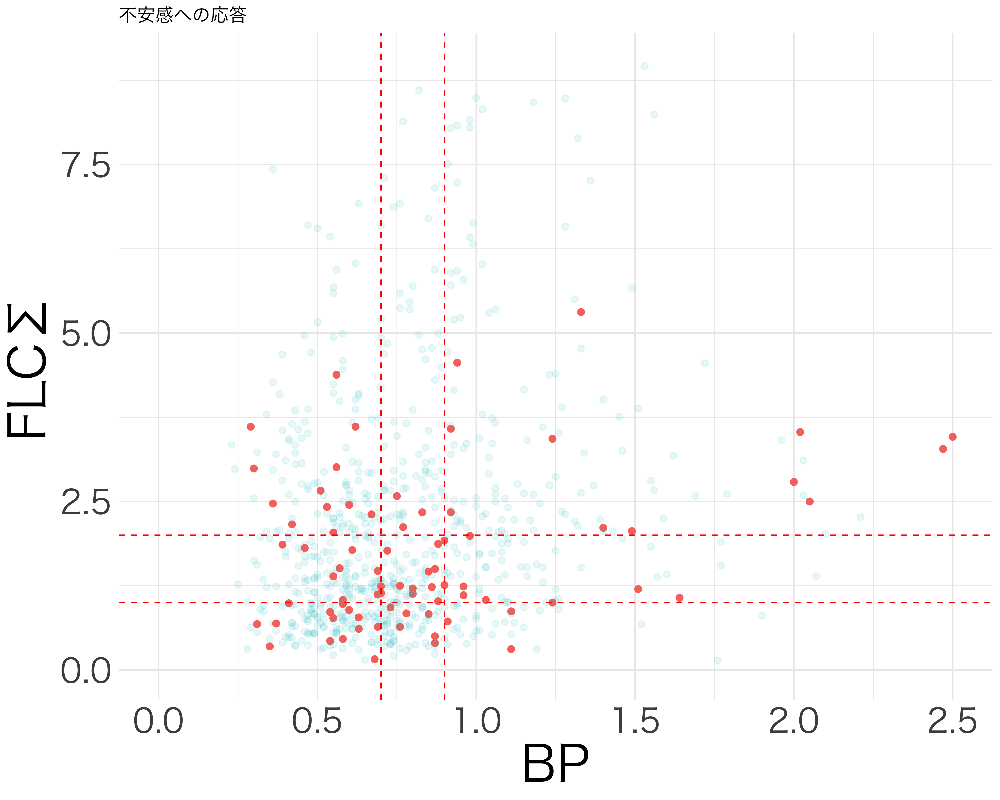
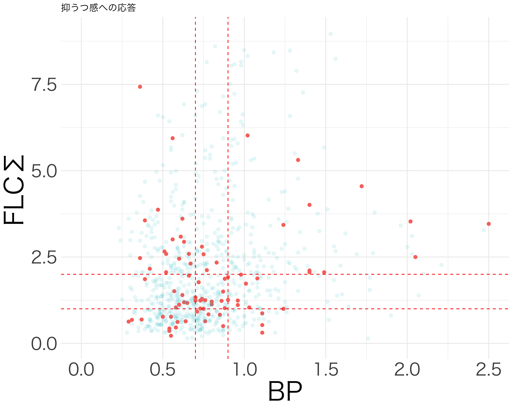
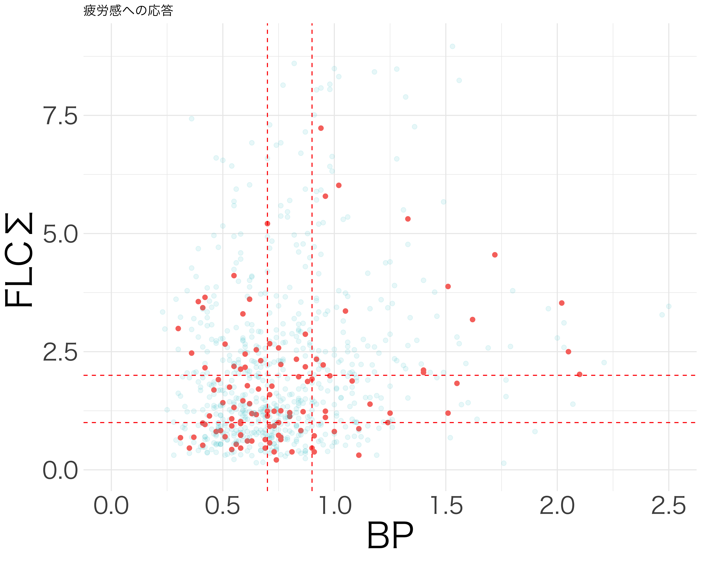

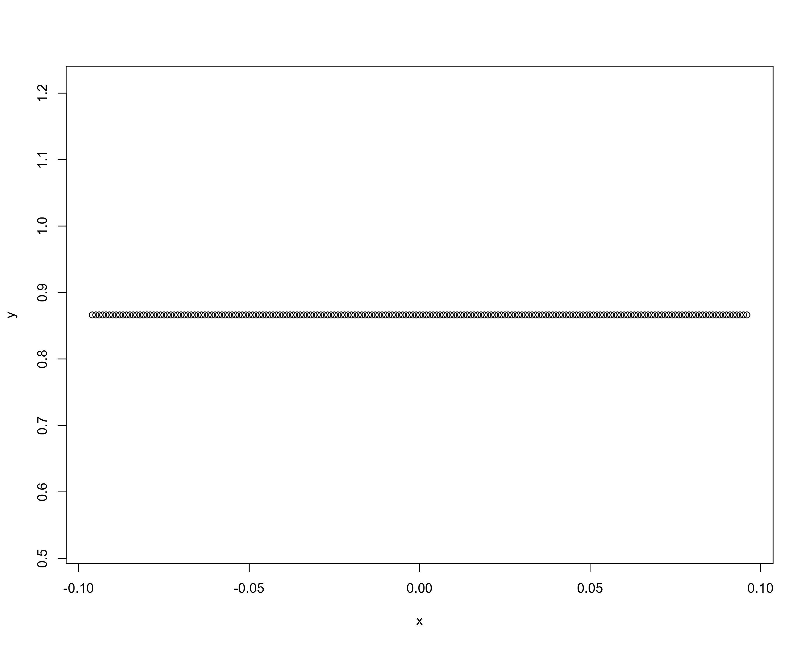
resp_df <- df[c("活気", "疲労感", "抑うつ感", "不安感", "イライラ感")]
# NAがある行を除外
resp_df_no_na <- resp_df[complete.cases(resp_df), ]
# 各行で4を超えている値の数をカウント
count_vector <- apply(resp_df_no_na, 1, function(row) sum(row > 4))
library(ggplot2)
# count_vector をデータフレームに変換
count_df <- data.frame(count = count_vector)
# 棒グラフの作成
ggplot(count_df, aes(x = factor(count))) +
geom_bar() +
labs(
title = "4を超える値の数の分布",
x = "4を超える値の数",
y = "頻度"
) +
theme_minimal() +
scale_x_discrete(limits = c("0", "1", "2", "3", "4", "5")) +
ylim(0,70)Warning: Removed 1 rows containing missing values (`geom_bar()`).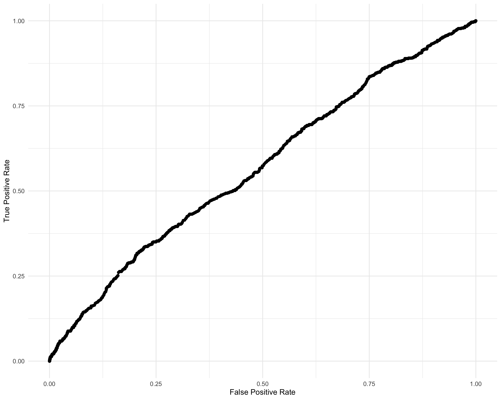
library(brms)
formula_1PL <- bf(
res ~ 1 + (1|item) + FLCΣ + BP
)
FLC_BP_1PL <- brm(
formula = formula_1PL,
data = df_IRT_long,
family = brmsfamily("bernoulli", link = "logit"),
chains = 4, cores = 4, iter = 8000
)summary(FLC_BP_1PL)Warning: There were 41 divergent transitions after warmup. Increasing
adapt_delta above 0.8 may help. See
http://mc-stan.org/misc/warnings.html#divergent-transitions-after-warmup Family: bernoulli
Links: mu = logit
Formula: res ~ 1 + (1 | item) + FLCΣ + BP
Data: df_IRT_long (Number of observations: 5594)
Draws: 4 chains, each with iter = 8000; warmup = 4000; thin = 1;
total post-warmup draws = 16000
Multilevel Hyperparameters:
~item (Number of levels: 5)
Estimate Est.Error l-95% CI u-95% CI Rhat Bulk_ESS Tail_ESS
sd(Intercept) 0.46 0.24 0.18 1.12 1.00 2745 1562
Regression Coefficients:
Estimate Est.Error l-95% CI u-95% CI Rhat Bulk_ESS Tail_ESS
Intercept -2.04 0.24 -2.56 -1.53 1.00 2551 1134
FLCΣ -0.01 0.01 -0.02 -0.00 1.00 12429 9231
BP 0.18 0.10 -0.01 0.36 1.00 10425 8836
Draws were sampled using sampling(NUTS). For each parameter, Bulk_ESS
and Tail_ESS are effective sample size measures, and Rhat is the potential
scale reduction factor on split chains (at convergence, Rhat = 1).ranef(FLC_BP_1PL)$item
, , Intercept
Estimate Est.Error Q2.5 Q97.5
イライラ感 -0.05670812 0.2401337 -0.56401708 0.4559521
活気 0.44240072 0.2382509 -0.04059189 0.9705884
疲労感 0.10342088 0.2377162 -0.39209284 0.6082293
不安感 -0.33609964 0.2423779 -0.85766510 0.1583487
抑うつ感 -0.20384570 0.2409346 -0.71164018 0.3023300conditional_effects(FLC_BP_1PL, effects = "BP")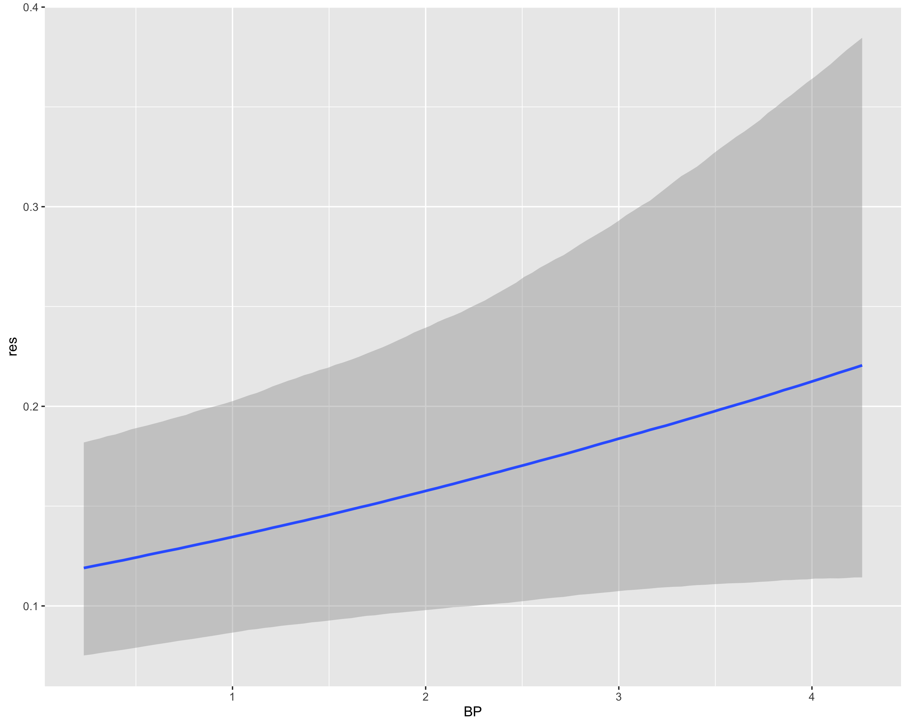
conditional_effects(FLC_BP_1PL, effects = "FLCΣ")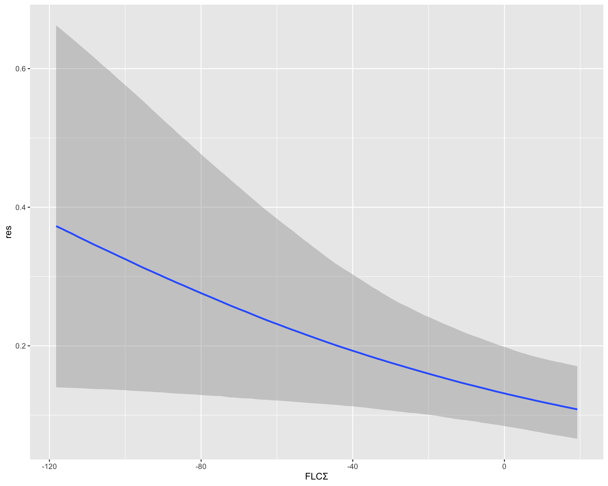
library(dplyr)
次のパッケージを付け加えます: 'dplyr' 以下のオブジェクトは 'package:stats' からマスクされています:
filter, lag 以下のオブジェクトは 'package:base' からマスクされています:
intersect, setdiff, setequal, unionran_ef_list <- list(
イライラ感 = -0.057,
活気 = 0.442,
疲労感 = 0.103,
不安感 = -0.336,
抑うつ感 = 0.209
)
df_IRT_long$ran_ef <- case_when(
df_IRT_long$item == "イライラ感" ~ ran_ef_list[["イライラ感"]],
df_IRT_long$item == "活気" ~ ran_ef_list[["活気"]],
df_IRT_long$item == "疲労感" ~ ran_ef_list[["疲労感"]],
df_IRT_long$item == "不安感" ~ ran_ef_list[["不安感"]],
df_IRT_long$item == "抑うつ感" ~ ran_ef_list[["抑うつ感"]],
TRUE ~ NA_real_
)
df_IRT_long <- df_IRT_long[!is.na(df_IRT_long$item), ]
beta_0 <- -2.04
beta_FLC <- -0.01
beta_BP <- 0.18
df_IRT_long$discrimination_score <- beta_0 + beta_FLC * df_IRT_long$FLCΣ + beta_BP * df_IRT_long$BP + df_IRT_long$ran_ef
summary(df_IRT_long$discrimination_score) Min. 1st Qu. Median Mean 3rd Qu. Max.
-2.3855 -2.0149 -1.8221 -1.8465 -1.6768 -0.8337 head(df_IRT_long)# A tibble: 6 × 8
id BP FLCΣ item response res ran_ef discrimination_score
<dbl> <dbl> <dbl> <chr> <dbl> <dbl> <dbl> <dbl>
1 2 0.47 0.81 活気 3 0 0.442 -1.52
2 2 0.47 0.81 イライラ感 3 0 -0.057 -2.02
3 2 0.47 0.81 疲労感 4 1 0.103 -1.86
4 2 0.47 0.81 不安感 3 0 -0.336 -2.30
5 2 0.47 0.81 抑うつ感 3 0 0.209 -1.75
6 4 1.1 1.95 活気 2 0 0.442 -1.42param <- seq(-2.385, -0.304, 0.001)
x <- c()
y <- c()
for (threshold in param) {
res_predicted <- df_IRT_long$discrimination_score > threshold
is_false <- res_predicted != df_IRT_long$res
is_true <- res_predicted == df_IRT_long$res
x <- append(x, mean(is_false[df_IRT_long$res == 0], na.rm = TRUE))
y <- append(y, mean(is_true[df_IRT_long$res == 1], na.rm = TRUE))
}
library(ggplot2)
ggplot(data.frame(x = x, y = y), aes(x = x, y = y)) +
geom_point(size = 2) +
geom_line() +
theme_minimal() +
labs(x = "False Positive Rate", y = "True Positive Rate") +
lims(x = c(0, 1), y = c(0, 1))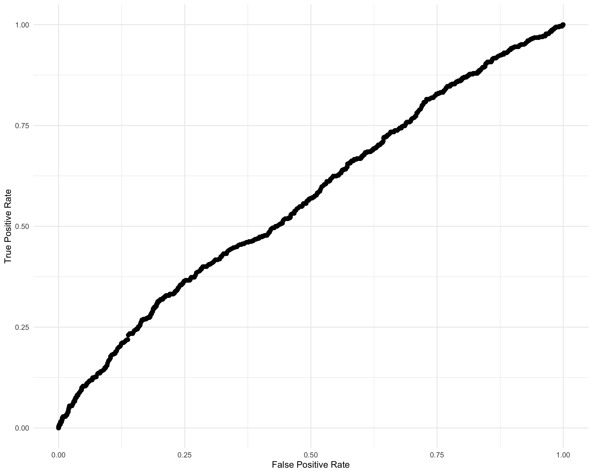
logit <- function(x) {
return(log(x / (1 - x)))
}
logistic <- function(x) {
return(1 / (1 + exp(-x)))
}
library(dplyr)
df_IRT_long <- df_IRT_long %>%
mutate(prediction = logistic(discrimination_score))
library(pROC)roc_obj <- roc(response = df_IRT_long$res, predictor = df_IRT_long$prediction)Setting levels: control = 0, case = 1Setting direction: controls < casesplot(roc_obj)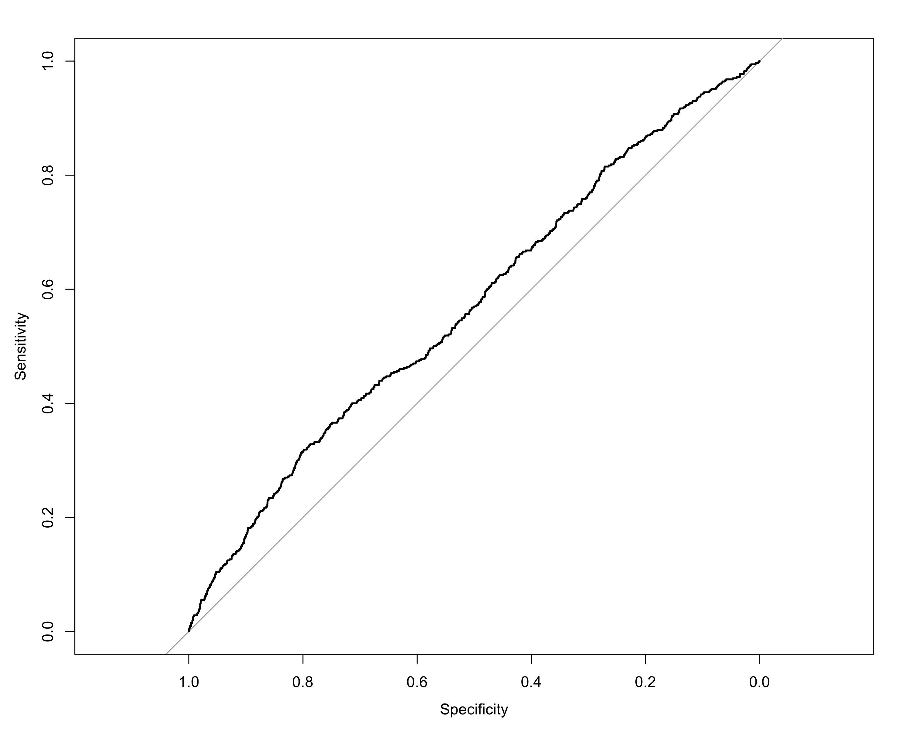
auc(roc_obj)Area under the curve: 0.5697library(brms)
FLC_BP_id_1PL <- readRDS("../../../Desktop/Mentalism/3-BayesianDataAnalysis/Cocosiru/rdb/fit_1PL_cov.rds")
summary(FLC_BP_id_1PL)Warning: There were 26 divergent transitions after warmup. Increasing
adapt_delta above 0.8 may help. See
http://mc-stan.org/misc/warnings.html#divergent-transitions-after-warmup Family: bernoulli
Links: mu = logit
Formula: 高スコア割合 ~ 1 + (1 | item) + (1 | id) + BP + FLCΣ
Data: df_IRT_long (Number of observations: 2877)
Draws: 4 chains, each with iter = 8000; warmup = 4000; thin = 1;
total post-warmup draws = 16000
Multilevel Hyperparameters:
~id (Number of levels: 576)
Estimate Est.Error l-95% CI u-95% CI Rhat Bulk_ESS Tail_ESS
sd(Intercept) 1.77 0.14 1.51 2.05 1.00 5609 9809
~item (Number of levels: 5)
Estimate Est.Error l-95% CI u-95% CI Rhat Bulk_ESS Tail_ESS
sd(Intercept) 0.52 0.31 0.19 1.39 1.00 4148 3588
Regression Coefficients:
Estimate Est.Error l-95% CI u-95% CI Rhat Bulk_ESS Tail_ESS
Intercept -2.96 0.37 -3.70 -2.22 1.00 6032 4383
BP 0.61 0.26 0.11 1.13 1.00 10057 5684
FLCΣ -0.12 0.07 -0.26 0.00 1.00 10961 5397
Draws were sampled using sampling(NUTS). For each parameter, Bulk_ESS
and Tail_ESS are effective sample size measures, and Rhat is the potential
scale reduction factor on split chains (at convergence, Rhat = 1).ran_ef_list <- ranef(FLC_BP_id_1PL)$item[,1,]
ran_id_list <- ranef(FLC_BP_id_1PL)$id[,1,]
df_IRT_long$ran_ef <- ran_ef_list[match(df_IRT_long$item, names(ran_ef_list))]
df_IRT_long$ran_id <- ran_id_list[match(df_IRT_long$id, names(ran_id_list))]
beta_0 <- -2.98
beta_FLC <- -0.12
beta_BP <- 0.61
df_IRT_long$discrimination_score <- beta_0 + beta_FLC * df_IRT_long$FLCΣ + beta_BP * df_IRT_long$BP + df_IRT_long$ran_ef + df_IRT_long$ran_id
df_IRT_long <- df_IRT_long[!is.na(df_IRT_long$discrimination_score),]
summary(df_IRT_long$discrimination_score) Min. 1st Qu. Median Mean 3rd Qu. Max.
-5.068 -3.749 -3.296 -2.752 -1.967 1.912 param <- seq(-5.07, 1.92, 0.001)
x <- c()
y <- c()
for (threshold in param) {
res_predicted <- df_IRT_long$discrimination_score > threshold
is_false <- res_predicted != df_IRT_long$res
is_true <- res_predicted == df_IRT_long$res
x <- append(x, mean(is_false[df_IRT_long$res == 0], na.rm = TRUE))
y <- append(y, mean(is_true[df_IRT_long$res == 1], na.rm = TRUE))
}
library(ggplot2)
ggplot(data.frame(x = x, y = y), aes(x = x, y = y)) +
geom_point(size = 2) +
geom_line() +
theme_minimal() +
labs(x = "False Positive Rate", y = "True Positive Rate") +
lims(x = c(0, 1), y = c(0, 1))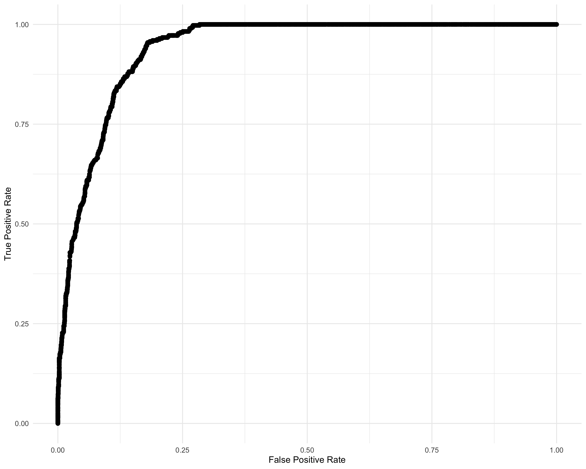
sum(y) / ((1.92 + 5.07) / 0.01)[1] 6.235536library(dplyr)
df_IRT_long <- df_IRT_long %>%
mutate(prediction = logistic(discrimination_score))library(pROC)
roc_obj <- roc(response = df_IRT_long$res, predictor = df_IRT_long$prediction)Setting levels: control = 0, case = 1Setting direction: controls < casesplot(roc_obj)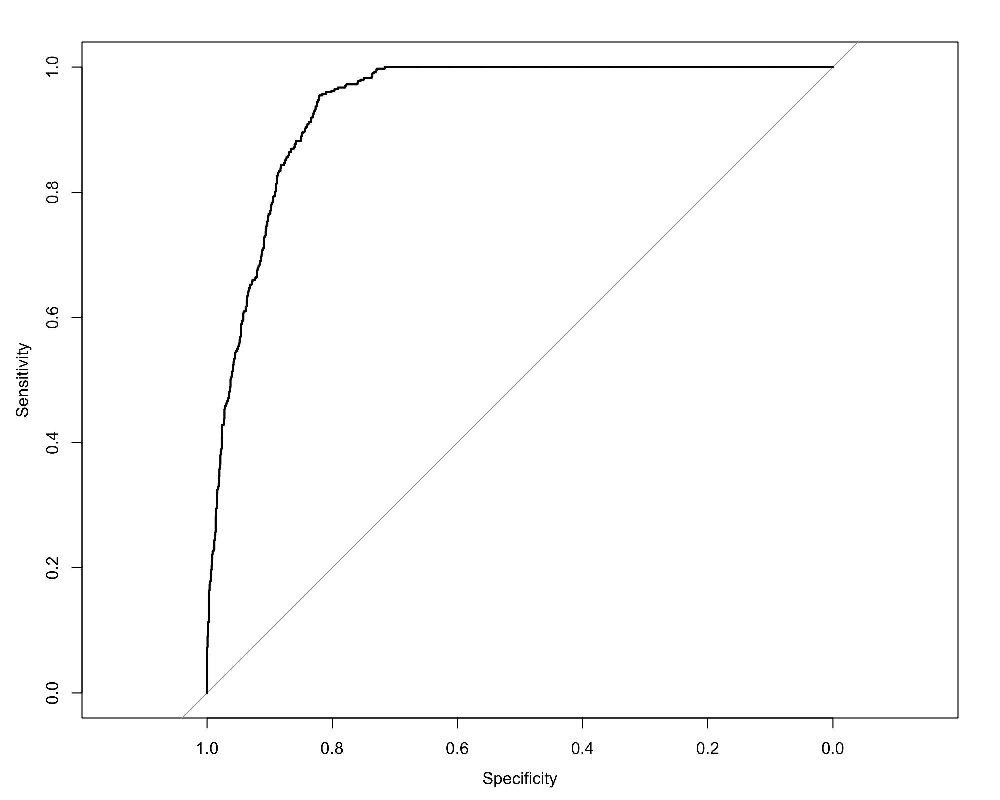
auc(roc_obj)Area under the curve: 0.939library(ggplot2)
ranef_id <- ranef(FLC_BP_id_1PL)$id
posterior_means <- ranef_id[,1,1]
lower_bounds <- ranef_id[,3,1]
upper_bounds <- ranef_id[,4,1]
plot_df_id <- data.frame(
id = rownames(ranef_id),
mean = posterior_means,
lower = lower_bounds,
upper = upper_bounds
)
plot_df_id <- plot_df_id %>% arrange(mean) %>% mutate(rank = row_number())
p_PL1_id <- ggplot(plot_df_id, aes(x = mean, y = rank)) +
geom_point() +
geom_errorbar(aes(xmin = lower, xmax = upper), width = 0.2) +
theme(
axis.text = element_text(size = 24), # 軸の目盛りの文字サイズ
axis.title = element_text(size = 30), # 軸ラベルの文字サイズ
legend.text = element_text(size = 36), # 凡例のテキストサイズ
legend.title = element_text(size = 24), # 凡例のタイトルサイズ
# plot.margin = margin(r = 20) # 右側の余白を50ポイントに設定
) +
labs(title = "Posterior Means and 95% Credible Intervals for Individuals",
x = "b",
y = "Individual (ID)")
p_PL1_id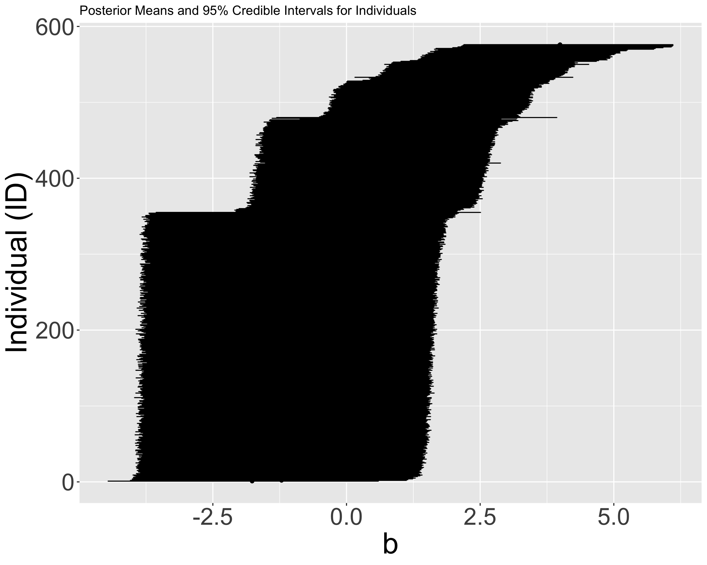
クラスタリングするだけでも精度が出そうだな．